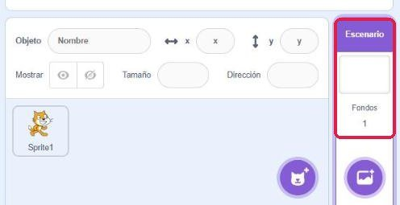
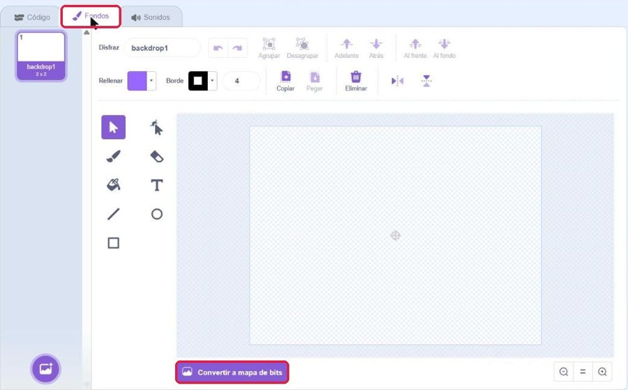
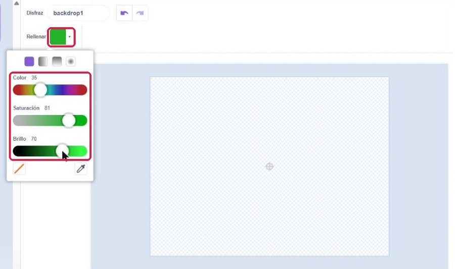
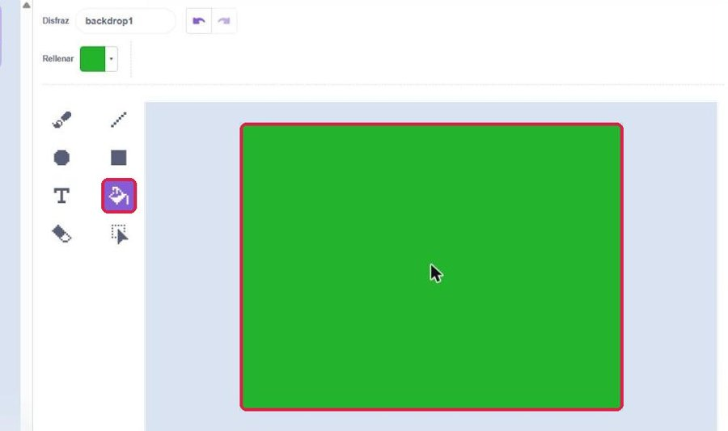
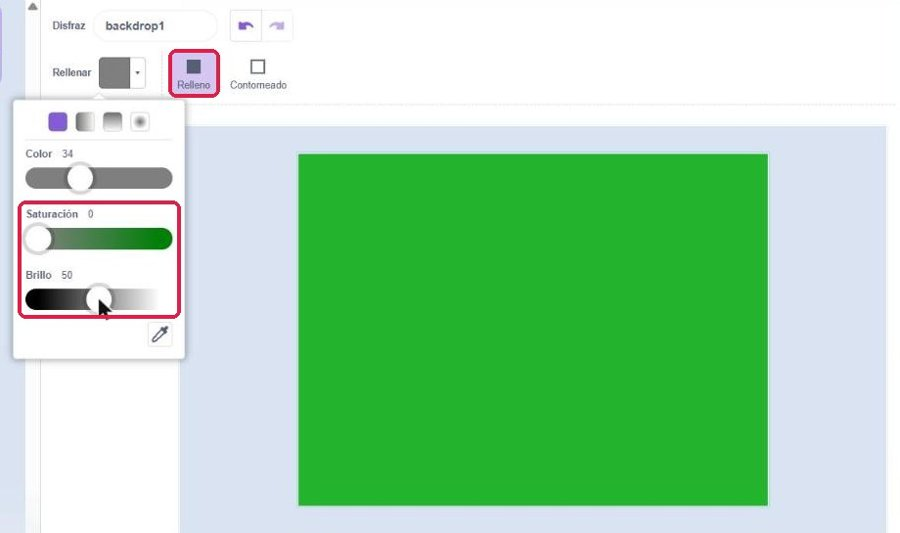
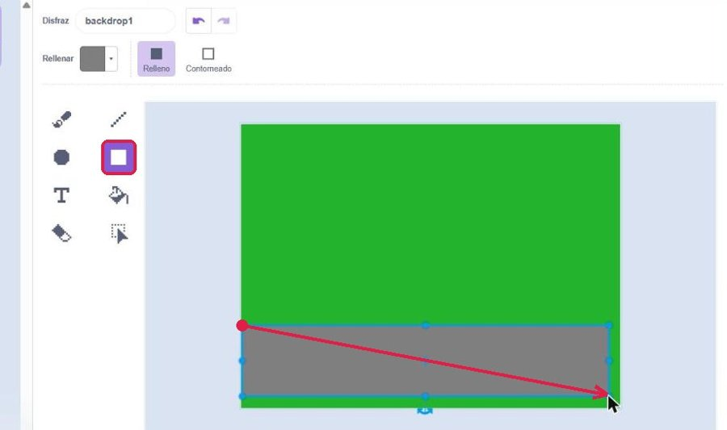
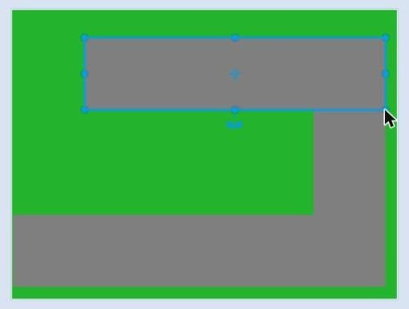
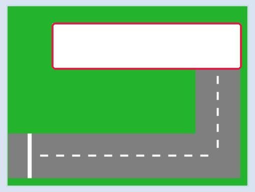
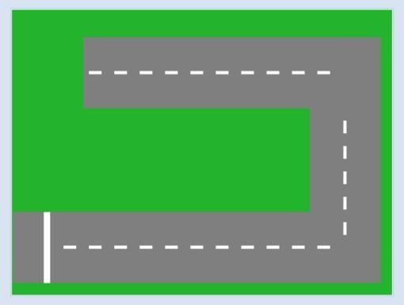
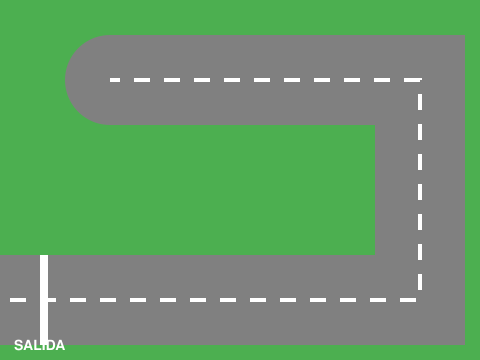

Carretera
Lo que vas a conseguir: un juego de carreras en dos clases: en la primera dibujas la carretera; en la segunda programas un coche que la recorre sin salirse al césped.
🐱 Abrir Scratch en otra pestañaConsejo: deja Scratch a un lado de la pantalla y esta página al otro. Así no tienes que ir y venir.
1Parte 1 · Dibuja la carretera
Hoy dibujas el fondo del juego: un césped verde y una carretera gris por la que circulará un coche en la Parte 2. Es la primera vez que dibujas en Scratch: sigue los pasos en orden y mira cada imagen. Lo marcado en rojo es lo que tienes que pulsar.
1.1Pinta el césped y la carretera
- Paso 1Abajo a la derecha, haz clic en Escenario. A partir de ahora lo que dibujes será el fondo, no un objeto.

El Escenario, abajo a la derecha - Paso 2Arriba, abre la pestaña Fondos. Verás el fondo en blanco, «backdrop1».
- Paso 3Abajo, pulsa Convertir a mapa de bits. Así el bote de pintura rellena todo el fondo de un solo clic.

La pestaña Fondos (arriba) y el botón Convertir a mapa de bits (abajo) - Paso 4Elige la herramienta Rellenar (el bote de pintura). Haz clic en el cuadrado de color de Rellenar, arriba, y mueve las tres barras hasta Color 35, Saturación 80, Brillo 70. Es el verde del césped.

El verde del césped: Color 35, Saturación 80, Brillo 70 - Paso 5Haz clic una vez dentro del recuadro de dibujo. Todo el fondo se vuelve verde.

Con el bote, un clic y el fondo entero queda verde - Paso 6Elige la herramienta Rectángulo y comprueba que arriba está marcado Relleno, no Contorneado.
- Paso 7Cambia el color de Rellenar a gris: Saturación 0, Brillo 50. Cuando la saturación es 0, el Color da igual.

El gris de la carretera: Saturación 0, Brillo 50 - Paso 8Dibuja el primer tramo: pincha abajo a la izquierda y, sin soltar, arrastra hasta la derecha. Debe ocupar todo el ancho del fondo y, de alto, más o menos una cuarta parte del fondo. Si es más estrecho, el coche no cabrá.

El primer tramo, de izquierda a derecha y abajo - Paso 9Dibuja otros dos tramos del mismo ancho: uno vertical a la derecha, de abajo arriba, y otro horizontal arriba, de derecha a izquierda. Cada tramo tiene que montarse un poco sobre el anterior: si entre dos tramos queda una rendija verde, el coche chocará ahí.

Los tres tramos: abajo, a la derecha y arriba
⚠️ Si te equivocas
Pulsa la flecha de deshacer (arriba, junto al nombre «backdrop1») tantas veces como haga falta. Deshace los pasos de uno en uno.
1.2Marca la salida y la raya del centro
- Paso 1Antes de cambiar de color, haz clic fuera del recuadro de dibujo, en la zona de alrededor.
- Paso 2Cambia el color de Rellenar a blanco: Saturación 0, Brillo 100.
- Paso 3Con el Rectángulo, dibuja la línea de salida: un rectángulo muy estrecho que cruce el tramo de abajo, cerca del borde izquierdo.
- Paso 4Dibuja la raya del centro con rectángulos pequeños y alargados, separados entre sí, siguiendo los tres tramos. Haz clic fuera del dibujo después de cada uno.
⚠️ El rectángulo recién dibujado sigue seleccionado
Hasta que haces clic fuera, el último rectángulo sigue seleccionado, con puntitos azules alrededor. Si cambias el color en ese momento, cambia el color de ese rectángulo, no el del siguiente. Aquí el tramo de arriba se ha vuelto blanco por eso. Se arregla con deshacer, o con el bote de pintura en gris sobre el tramo.


1.3Dibuja un segundo fondo más difícil
Un segundo fondo, con una carretera más difícil. Esta la diseñas tú.
- Paso 1En la pestaña Fondos, abajo a la izquierda, pasa el ratón por el botón del fondo y elige el pincel (Pinta): aparece un fondo nuevo en blanco, «backdrop2».
- Paso 2Conviértelo a mapa de bits y pinta el césped igual que en el 1.1.
- Paso 3Dibuja una carretera con al menos cinco tramos, más difícil que la primera: más giros o tramos más estrechos, pero que el coche quepa.
- Paso 4Marca la salida y la raya del centro igual que en el 1.2.
Lo has conseguido si…
- No queda nada blanco en el fondo: todo es césped o carretera.
- La carretera es continua: no hay rendijas verdes entre los tramos.
- Los tramos son anchos, más o menos una cuarta parte del fondo.
- La salida y la raya del centro están dibujadas (apartado 1.2).
- Hay un segundo fondo con una carretera de al menos cinco tramos (apartado 1.3).
📤 Qué tienes que entregar hoy
Cómo se valora. Todo va en el mismo archivo. Un apartado cuenta si está hecho; a medias no suma.
| Lo que entregas hecho | Nota |
|---|---|
| 1.1 | 5 |
| 1.1 y 1.2 | 8 |
| 1.1, 1.2 y 1.3 | 10 |
Sin el 1.1 hecho no hay nota, aunque estén los demás: lo repites.
- Archivo → Guardar en tu ordenador. Se descarga un archivo
.sb3en tu carpeta Descargas. - Cámbiale el nombre a Sesion12-1_TuNombre.sb3.
- Súbelo a la tarea de Moodle «S12 · Parte 1».
Parte 2 · Programa el coche
En la segunda clase todos usáis el mismo fondo, este. Descárgalo y cárgalo en Scratch como se explica en el 5.1.


2Dos bloques nuevos y una idea
- sumar a x (3) y sumar a y (3). Mueven el objeto en horizontal y en vertical sin girarlo. Para recorrer una carretera de tramos rectos van mejor que mover, porque el coche no tiene que girar para subir o bajar.
- ¿tocando el color ( )?. Una condición de Sensores que mira si el objeto está pisando un color concreto de la pantalla. Así se entera el programa de que el coche se ha salido.
- Y la idea. En Scratch los bordes de la carretera no existen. Lo que hay es un dibujo verde y un programa que dice «si estás tocando el verde, vuelve a la salida». Para el jugador el efecto es el mismo.
El estilo de rotación izquierda-derecha ya lo conoces de sesiones anteriores: con él, al apuntar a -90 el coche mira a la izquierda en vez de ponerse boca abajo.
3Lee estos dos trozos
Primero, el movimiento. Cuatro condicionales, uno por flecha, dentro de un por siempre que los vigila todo el rato:
Y ahora el césped. Este trozo va dentro del mismo por siempre, debajo de los cuatro anteriores:
Si tocas el césped, vuelves a la salida. Es el castigo clásico de los juegos de carreras, y se resuelve con un solo condicional.
- 1Al pulsar la bandera, el coche se pone a su tamaño, mirando a la derecha y en la salida.
- 2El por siempre mira las cuatro flechas una y otra vez. La que esté pulsada mueve el coche 3 pasos en su sentido; las de izquierda y derecha, además, lo giran hacia donde va.
- 3En cada vuelta mira también si el coche pisa el verde. Si lo pisa, suena y lo devuelve a la salida mirando a la derecha.
4Comprueba que lo has entendido
Pones el condicional del césped y, al probarlo, el coche atraviesa el césped como si nada. ¿Cuál es la causa más probable?
5Tu actividad
Al terminar, en tu proyecto tiene que estar: el coche (5.1 y 5.2), la estrella (5.2) y el camión (5.3). Cada objeto, con su programa.
5.1Monta el coche
- Paso 1Carga el fondo común: abajo a la derecha, pasa el ratón por el botón de Fondos y elige Cargar fondo. Abre el archivo carretera.svg que has descargado (está en tu carpeta Descargas).
- Paso 2Borra el gato y añade el coche: botón Elige un objeto, escribe Convertible y elige el descapotable morado.
- Paso 3Monta en el coche los dos trozos de arriba: el movimiento y, dentro del mismo por siempre, debajo de los cuatro si, el condicional del césped.
- Paso 4El verde del bloque ¿tocando el color? se coge con el cuentagotas: haz clic en el color del bloque, después en el cuentagotas, y pincha en el césped del escenario. No lo elijas a ojo.
- Paso 5Prueba: el coche recorre la carretera de la salida al final. Si toca el césped, suena y vuelve a la salida. En las esquinas, llega hasta el centro del tramo y entonces gira.
5.2Añade una estrella que dé puntos
Una estrella en la carretera que da un punto al cogerla y desaparece.
- Paso 1Añade la estrella: botón Elige un objeto (el del gato, abajo a la derecha), escribe Star en el buscador y elige Star, la estrella amarilla. Ponle tamaño 50 y colócala en el tramo de la derecha.
- Paso 2Crea la variable Puntos. En el programa del coche, justo debajo de la bandera, pon dar a Puntos el valor 0.
- Paso 3Selecciona la estrella: al hacer clic en la bandera, mostrar y un por siempre con un si ¿tocando Convertible? entonces dentro. Convertible es el coche.
- Paso 4Dentro del si: sumar a Puntos 1, esconder y detener este programa. Mostrar y esconder están en Apariencia; el detener es el de la sesión 4, con «este programa» en el desplegable.
- Paso 5Juega: al pasar por la estrella desaparece y Puntos sube a 1. Sólo a 1: sin el detener, seguiría sumando mientras la tocas.
5.3Monta el camión que patrulla a partir del texto
Un camión que va y viene por el tramo de arriba de la carretera y pita si toca al coche.
- Paso 1Añade el camión: botón Elige un objeto (el del gato, abajo a la derecha), escribe Truck en el buscador y elige Truck. Arrástralo con el ratón al tramo de arriba de la carretera.
- Paso 2Selecciónalo abajo a la derecha antes de arrastrar ningún bloque. Este programa va en el camión, no en el coche ni en la estrella.
- Paso 3Monta el programa de abajo. El verde lo coges con el cuentagotas, igual que en el programa del coche.
- Paso 4Para probarlo, pulsa la bandera para el coche y luego la tecla C para poner en marcha el camión.
Aquí no hay dibujo: cada línea es un bloque, escrito con las mismas palabras que en Scratch. Lo que escribes tú va entre paréntesis ( ); lo que eliges en un desplegable, entre corchetes [ ]. Lo que va con sangría va dentro de la línea de arriba.
- al presionar tecla [c]
- fijar tamaño al (20) %
- fijar estilo de rotación a [izquierda-derecha]
- apuntar en dirección (90)
- por siempre
- mover (3) pasos
- si ¿tocando el color [el verde del césped]? entonces
- girar ↻ (180) grados
- mover (20) pasos
- si ¿tocando [Convertible]? entonces
- decir (¡Piii!) durante (1) segundos
Sabes que está bien si… al pulsar C el camión avanza por el tramo de arriba, al llegar al césped se da la vuelta y sigue en sentido contrario, una y otra vez, sin quedarse atascado. Si llevas el coche hasta él, dice «¡Piii!». Se para con el círculo rojo.
6Lo has conseguido si…
- El coche se mueve con las cuatro flechas y mira hacia donde va.
- Al tocar el césped suena y vuelve a la salida.
- Se puede recorrer toda la carretera, de la salida al final, sin salirse.
- El apartado 5.2 también está hecho y va en el mismo archivo.
- El programa del apartado 5.3 está montado y hace lo que dice «Sabes que está bien si…».
📤 Qué tienes que entregar
Cómo se valora. Todo va en el mismo archivo. Un apartado cuenta si funciona; a medias no suma.
| Lo que entregas hecho | Nota |
|---|---|
| 5.1 | 5 |
| 5.1 y 5.2 | 8 |
| 5.1, 5.2 y 5.3 | 10 |
Sin el 5.1 hecho no hay nota, aunque estén los demás: lo repites.
En el proyecto tienen que estar: el coche (5.1 y 5.2), la estrella (5.2) y el camión (5.3).
Antes de nada: como no usamos cuenta de Scratch, tu proyecto sólo existe en esta pestaña. Si la cierras sin descargarlo, se pierde.
- Archivo → Guardar en tu ordenador. Se descarga un archivo
.sb3que aparece en tu carpeta Descargas. - Cámbiale el nombre a Sesion12-2_TuNombre.sb3.
- Súbelo a la tarea de Moodle «S12 · Parte 2».